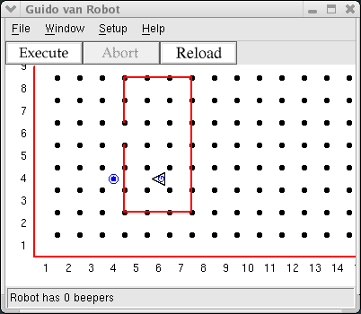

Every day, Guido is awakened by the sound of the Robotics Times newspaper
hitting the front porch. Guido wants to stay current on news about robotics,
so he goes out and gets the paper each morning. Here is a picture showing
Guido asleep when the newspaper, represented by a beeper, hits the porch.
Write a program including your turnright instruction and a new
instruction, turnaround, to have him go and get the newspaper and
return to bed, where he likes to read.
You also need to place the beeper, as shown, in the world. The second line in
the step06.wld file, Beepers 4 4 1,
is used to place a beeper. The first two numbers are the location and the last
is how many beepers are placed at that intersection.

Have Guido start in the position shown facing West. Make him get the beeper and then return to the same place, facing the same direction as he started.
Copyright © 2003 Roger Frank.